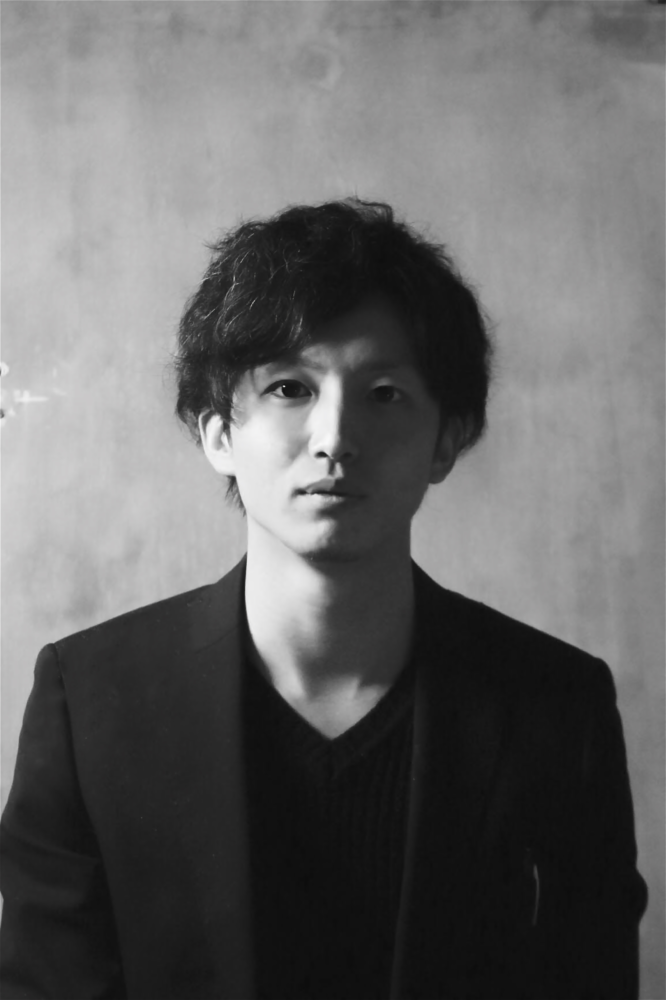

Uotani Isato
| 1994 | 徳島県生まれ |
|---|---|
| 2013 |
長野県の大学へ進学。 地域創生、地域活性化を専攻 メディアやSNSの観点から目指す ゆるキャラ運動会の運営、都心大学のゼミ合宿の誘致・招待 県内印刷会社との連携による県内スポットの紹介コーナー責任者 |
| 2018 | 大学卒業後、デザイナーを目指すも挫折 アパレル業界に入社後、販売員として注力 |
| 2020 | 店長代行として店舗運営に参画 |
| 2025 |
約６年９ヶ月の勤務を終え、退職 同年５月から県内のスクールに入学 WEBデザインについて学ぶ 同年１１月 約半年間の学びを終え卒業 現在に至る |
| 1994 | Born in Tokushima Prefecture, Japan |
|---|---|
| 2013 |
Entered university in Nagano Prefecture. Majored in Regional Revitalization; pursued local development through Media and SNS. Managed "Yuru-chara" (mascot) sports events and promoted seminar camps for urban universities. Led a project introducing local spots in collaboration with a printing company in Nagano. |
| 2018 | After graduation, pursued a career in design before pivoting to the apparel industry; dedicated myself to sales and customer service. |
| 2020 | Contributed to store operations as an Acting Store Manager. |
| 2025 |
Resigned after approximately 6 years and 9 months of
service. Enrolled in a design school in May to study Web Design. Graduated in November after completing a six-month program. Currently active. |
徳島県出身 ３１歳
２０１８年
長野県の大学を卒業後、アパレル会社に就職。
幼い頃から、何かを作り出すことに興味があり学生時代では写真展やフリーペーパー制作、雑誌のコーナーを担当したりしていました。
WEB制作中心に勉強しながら、プライベートでショート動画の撮影・編集や宣伝用写真の撮影などの活動も行っています。
自分の作ったもので、目の前の人が笑顔になったり、場が明るくなったりする瞬間に最大の喜びを感じるからです。一方で、美術館のような静謐な美しさにも惹かれます。その2つを繋ぎ、『本質的な価値を形にして、受け取った人をワクワクさせる』という役割を全うしたくて、デザイナーを志しました。
『温度感のある非日常』を届けられるデザイナーを目指し、単に綺麗なものを作るのではなく、一つひとつの要素に理由を持ち、ユーザーがどこか懐かしく、でも新しいと感じるような『体験』をデザインしたい。クライアントの意志を汲み取り、唯一無二の正解を提示し続けたいです。